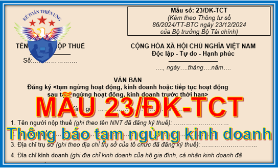

Mẫu 23/ĐK-TCT theo Thông tư 86/2024/TT-BTC - Mẫu thông báo tạm ngừng kinh doanh mới nhất: Thông báo tạm ngừng hoạt động, kinh doanh hoặc tiếp tục hoạt động sau tạm ngừng hoạt động, kinh doanh trước thời hạn:
Mẫu 23/ĐK-TCT theo Thông tư 86/2024/TT-BTC này sẽ áp dụng từ ngày 06/02/2025 thay thế cho Mẫu 23/ĐK-TCT theo Thông tư 105/2020/TT-BTC.
VĂN BẢN
Đăng ký <tạm ngừng hoạt động, kinh doanh hoặc tiếp tục hoạt động sau tạm ngừng hoạt động, kinh doanh trước thời hạn> Kính gửi: …………………………………… 1. Tên người nộp thuế (ghi theo tên NNT đã đăng ký thuế): ……………………… 2. Mã số thuế: ……………………………………………………………………… 3. Địa chỉ trụ sở (ghi theo địa chỉ trụ sở của tổ chức đã đăng ký thuế): ……………………… 4. Địa chỉ kinh doanh (ghi địa chỉ kinh doanh của hộ gia đình, cá nhân kinh doanh đã đăng ký thuế): ……………………………………………………………………… 5. <Trường hợp tạm ngừng hoạt động, kinh doanh>: a) Thời gian tạm ngừng: …………………………………………… b) Thời điểm bắt đầu tạm ngừng: Ngày………/……/………… c) Thời điểm kết thúc tạm ngừng: Ngày………/……/………… d) Lý do tạm ngừng hoạt động, kinh doanh: ……………………… <Trường hợp tiếp tục hoạt động sau tạm ngừng hoạt động, kinh doanh trước thời hạn>: a) Thời điểm tiếp tục hoạt động sau tạm ngừng hoạt động, kinh doanh trước thời hạn: Ngày………/……/………… b) Lý do tiếp tục hoạt động sau tạm ngừng hoạt động, kinh doanh trước thời hạn: …………………………………………………………………………………………… Người nộp thuế cam kết về tính chính xác, trung thực và hoàn toàn chịu trách nhiệm trước pháp luật về nội dung của thông báo này./.
|
--------------------------------------------------------------------------
Quy định về việc tạm ngừng hoạt động, kinh doanh
Căn cứ theo Điều 12 và Điều 13 Thông tư 86/2024/TT-BTC quy định cụ thể như sau:
Điều 12. Thông báo tạm ngừng hoạt động, kinh doanh hoặc tiếp tục hoạt động sau tạm ngừng hoạt động, kinh doanh trước thời hạn
Khi tạm ngừng hoạt động, kinh doanh hoặc tiếp tục hoạt động, kinh doanh trước thời hạn, người nộp thuế thực hiện thông báo theo quy định tại khoản 1, khoản 2 Điều 37 Luật Quản lý thuế, Điều 4 Nghị định số 126/2020/NĐ-CP và các quy định sau đây:
1. Tổ chức không thuộc diện đăng ký kinh doanh thực hiện gửi Thông báo mẫu số 23/ĐK-TCT ban hành kèm theo Thông tư này đến cơ quan thuế quản lý trực tiếp theo thời hạn quy định tại điểm c khoản 1, khoản 3 và khoản 4 Điều 4 Nghị định số 126/2020/NĐ-CP.
2. Sau khi cơ quan thuế đã ban hành Thông báo người nộp thuế không hoạt động tại địa chỉ đã đăng ký, doanh nghiệp, hợp tác xã, tổ hợp tác phải thực hiện thủ tục khôi phục mã số thuế theo quy định tại điểm b khoản 1 Điều 18 và điểm b khoản 1 Điều 19 Thông tư này trước khi đăng ký tạm ngừng hoạt động kinh doanh với cơ quan đăng ký kinh doanh.
Điều 13. Xử lý Thông báo tạm ngừng hoạt động, kinh doanh hoặc tiếp tục hoạt động, kinh doanh trước thời hạn
Việc xử lý Thông báo tạm ngừng hoạt động, kinh doanh hoặc tiếp tục hoạt động, kinh doanh trước thời hạn của người nộp thuế; xử lý Văn bản chấp thuận tạm ngừng hoạt động, kinh doanh hoặc tiếp tục hoạt động sau tạm ngừng hoạt động, kinh doanh trước thời hạn của cơ quan nhà nước có thẩm quyền được thực hiện theo quy định tại khoản 1, khoản 2 Điều 37 Luật Quản lý thuế; khoản 1, khoản 3, khoản 4 Điều 4 Nghị định số 126/2020/NĐ-CP và các quy định sau:
1. Đối với Thông báo tạm ngừng hoạt động, kinh doanh hoặc tiếp tục hoạt động, kinh doanh trước thời hạn của người nộp thuế:
Cơ quan thuế thực hiện xử lý hồ sơ và ban hành Thông báo chấp thuận/ hoặc không chấp thuận tạm ngừng hoạt động, kinh doanh mẫu số 27/TB-ĐKT, Thông báo về việc tạm ngừng hoạt động, kinh doanh theo đơn vị chủ quản mẫu số 33/TB-ĐKT (nếu có), Thông báo về việc tiếp tục hoạt động, kinh doanh trước thời hạn theo đơn vị chủ quản mẫu số 34/TB-ĐKT (nếu có) ban hành kèm theo Thông tư này gửi người nộp thuế trong thời hạn 02 (hai) ngày làm việc kể từ ngày nhận đủ hồ sơ của người nộp thuế theo quy định.
2. Đối với văn bản chấp thuận tạm ngừng hoạt động, kinh doanh hoặc tiếp tục hoạt động, kinh doanh trước thời hạn của cơ quan nhà nước có thẩm quyền:
Cơ quan thuế cập nhật thông tin tạm ngừng hoạt động, kinh doanh hoặc tiếp tục hoạt động, kinh doanh của người nộp thuế vào hệ thống ứng dụng đăng ký thuế, trừ trường hợp người nộp thuế đang bị cơ quan thuế thông báo không hoạt động tại địa chỉ đã đăng ký.
----------------------------------------------------------------
Tải mẫu thông báo tạm ngừng kinh doanh Mẫu 23/ĐK-TCT về tại đây:
Nếu bạn không tải về được thì có thể làm theo cách sau:
Bước 1: Để lại mail ở phần bình luận bên dưới
Bước 2: Gửi yêu cầu vào mail: ketoandieutam@gmail.com (Tiêu đề ghi rõ "Muốn tải Mẫu 23/ĐK-TCT theo Thông tư 86")
Kế toán Diệu Tâm chúc các bạn thành công!
-------------------------------------------------------------------
